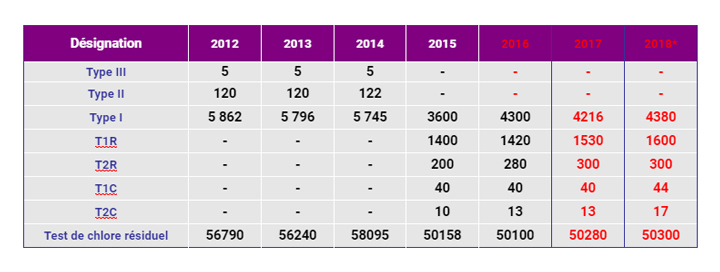

Espace Technique
Eau Potable
Qualité de l'eau
Le contrôle de la qualité de l’eau potable est assuré à trois niveaux : système de production assuré par l’ONEE/BRANCHE EAU et système de distribution assuré par la RAMSA. Le Ministère de la Santé assure également le contrôle la qualité de l'eau de boisson. Ce contrôle est assuré par le service d'hygiène qui effectue quotidiennement des relevés du chlore dans le Grand Agadir et des prélèvements pour analyses bactériologiques.
Système de production
Etant le producteur exclusif, l'ONEE/BRANCHE EAU assure le contrôle et la surveillance de la qualité de toutes les eaux produites. Ainsi, toutes les eaux souterraines (puits et forages) sont chlorées à leur origine ou à la sortie du champ captant. Pour les eaux de surface, après un dégrillage effectué au barrage, ces eaux sont acheminées vers la station de traitement où elles subissent un traitement correspondant à la chaîne conventionnelle: Dessablage + préchloration + floculation + décantation + filtration + chloration.
Système de distribution
Le contrôle et la surveillance de la qualité de l’eau sont assurés par le service contrôle qualité des eaux de la RAMSA. Cette surveillance, destinée à protéger la santé du consommateur, consiste à la vérification de la potabilité des eaux jusqu’aux points de livraison des consommateurs sur le plan physico-chimique et bactériologique.
Tâches
Le service qualité des eaux s’occupe principalement des tâches suivantes :
Suivi de la teneur en chlore libre :
Le chlore est un élément essentiel offrant à l'eau destinée à l'alimentation humaine une protection contre toute ultérieure contamination. Ainsi, pour améliorer le contrôle et la surveillance de la qualité des eaux distribuées dans le réseau du Grand Agadir une mesure quotidienne des doses du désinfectant résiduel est effectuée en des points du réseau suffisamment nombreux pour donner une image de l’évolution de ces doses à l’intérieur du réseau. Les relevés de la teneur de chlore résiduel libre sont effectués quotidiennement dans le réseau du Grand Agadir notamment au niveau des points les plus sensibles tels que les écoles, les hôpitaux, les centres de santé. Au niveau des réservoirs, les relevés du chlore résiduel libre sont effectués toutes les deux heures. Les résultats des relevés du chlore ont permis de décider de l'intérêt de la mise en place des dispositifs de correction de la teneur en chlore libre à l'intérieur du réseau permettant l'ajustement de cette teneur en cas d'insuffisance dans les arrivées de l'ONEE/BRANCHE EAU. Tous les sites de la RAMSA sont équipés des dispositifs de correction de chlore.
Prélèvements d’échantillons d’eau
Les prélèvements des échantillons d’eau sont destinés aux analyses bactériologiques et physico-chimiques décomposés en analyses type I (T1R et T1C) et analyses type II (T2Ret T2C) conformément aux normes marocaines NM03.7.001 et NM03.7.002 Les analyses T1R et T1C sont effectués à l’intérieur du réseau suivant les fréquences d’échantillonnage déterminés par la norme NM03.7.002 Les analyses T2R et T2C sont effectués à l’entrée du réseau suivant les fréquences d’échantillonnage déterminé par la norme NM03.7.002 Les points de prélèvements destinés à ces analyses sont répartis par commune et leur fréquence est déterminée en fonction de la population desservie conformément aux normes marocaines.
STATISTIQUES EAU POTABLE
Conformité Les analyses bactériologiques et Physico-chimiques des échantillons d’eau prélevés au niveau du réseau de distribution présentent 100% de résultats conformes à la Norme Marocaine NM 03.7.001
© RAMSA
Realisation 2019